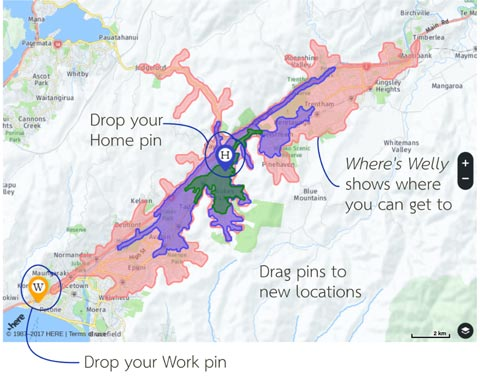

Understanding where in the Well you are.
Understanding where in the Well you are.
Wellington is famous for its hills. What is less famous is the impact those hills have on how long it takes to get from one place to another. Where’s Welly answers that question.
Using the tool you can pick a spot on the map and see everywhere you can get to within 15 minutes. You can filter by mode of transport, time of day, day of the week. We also provide a layer of resources which you can switch on/off to see what destinations you can reach.
Sounds great?
Pick a starting point, see where you can go
To use the map, click once to drop a (H) pin for home and a (W) pin for work.

If you want, drag either pin to a new location. Look up the graph to see how much time different ways of getting around will take.
How expensive is that?
You can show average rents for areas, so you can see where might be a good deal for you.